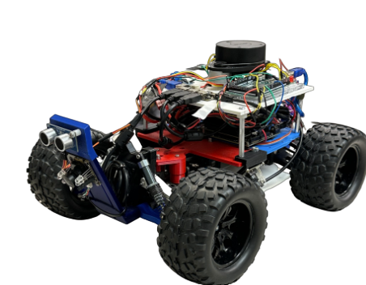

Contact Info
804-300-4036 | geraldnkansah@gmail.com | Richmond, VA |
LinkedIn
Technical Skills/Competencies
- FPGA Experience
- HTML
- Node.js
- Python
- Java/JavaScript
- CSS
- C and C++
- Github
- Matlab
- Microsoft Skills, Excel, Word, PowerPoint, Outlook
- Google Suite: Docs, Gmail, Slides, Sheets
- Communication tools: Slack, Teams, Zoom, Discord
Education
George Mason University | Bachelor's of Science in Computer
Engineering | May 2024
Institute of Data - Virginia Commonwealth U. accredited | Certificate
in Software Engineering | February 2025
Relevant Coursework
- Computer Networking
- Embedded Systems
- Continuous and Discrete Signals
- Object Oriented Programming
- Data Structures
- Operating Systems
- Computer Design
- Microcontrollers
- Digital System Design
- Python/Java/C++/Hardware Programming
Projects
George Mason University | Function Generator — Op Amp
Project
-
Created a Function Generator on a circuit using op-amps in this
project.
-
This Function Generator can create Sine Waves, Square Waves, and
Triangle Waves.
George Mason University | Lights Out Puzzle
Created a lights out puzzle on an FPGA Board that can work for two variants.
Here is one variant.Variant 1
Here is another. Variant 2
George Mason University | Self-Aware Lane Tracking and Tracing for
Autonomous Systems – Senior Design Project

-
This project aims to create a lightweight self-aware AI system for
lane assistance on low-end autonomous systems, utilizing prototypes
on platforms like Raspberry Pi to minimize resource consumption.
Institute of Data - Virginia Commonwealth U. accredited | Certificate in Software Engineering - Dashboard Application Project
- Developed a non responsive basic dashboard using HTML and CSS showcasing advanced layout techniques
such as CSS Grid. Includes a sidebar menu, cards, trending section and a user profile display. It focuses on clean design and usability.
View Project
Work Experience
Front End Cashier | Walmart | June 2020 to Present
-
Greet customers with a friendly welcome and positive attitude.
- Ensure all transactions are processed quickly and accurately.
- Address and resolve customer problems and complaints.
- Stock items as needed.
- Gather carts from the parking lot.
Awards/Service
YMCA Volunteer of the Month | Dean’s List: Spring 2021, Spring 2024